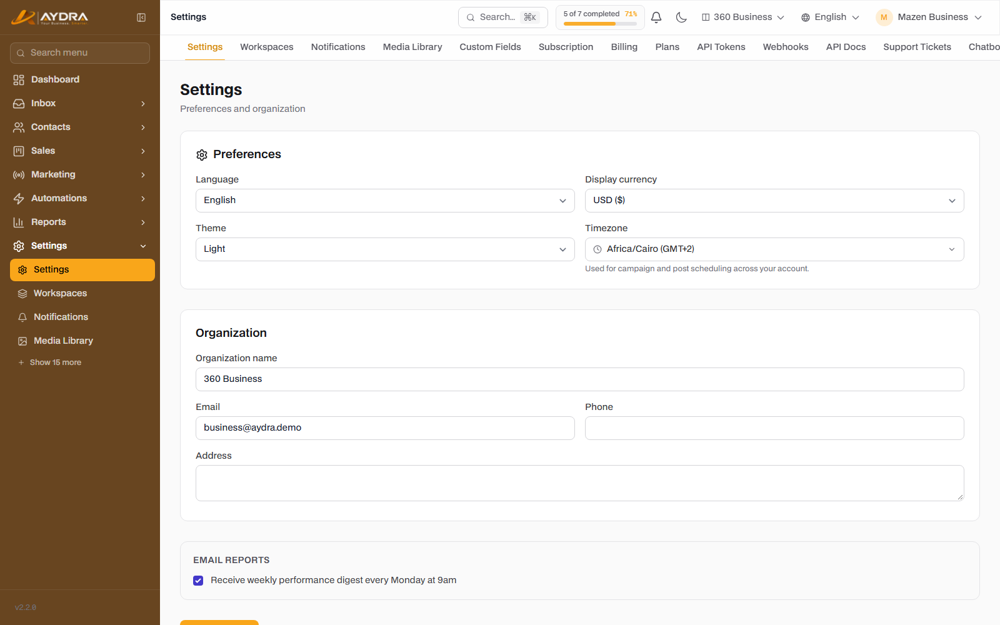
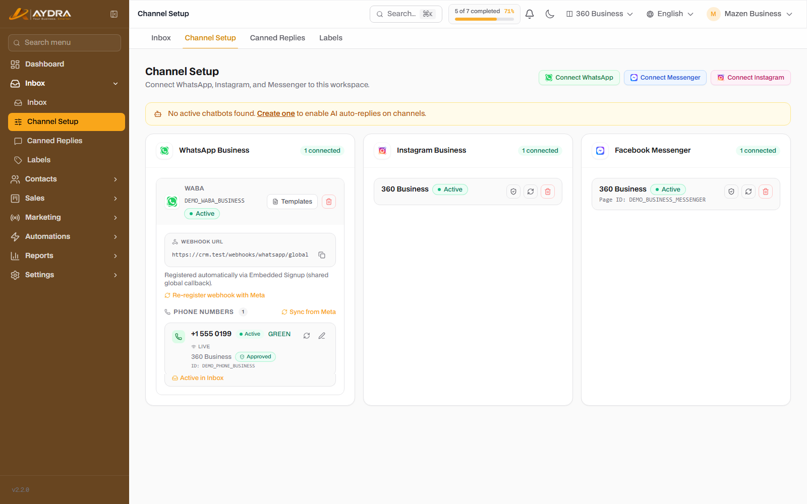
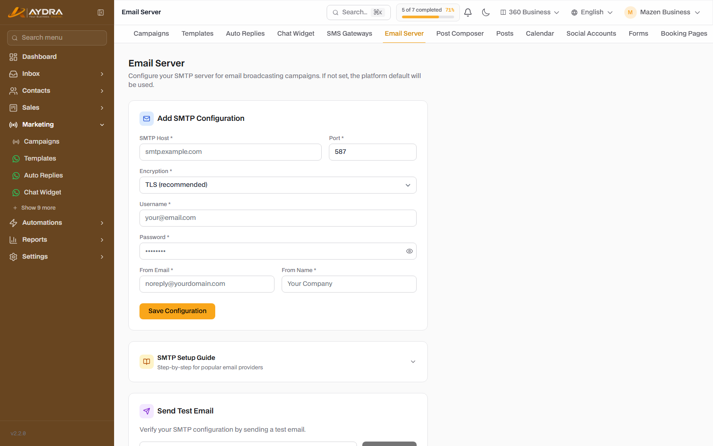
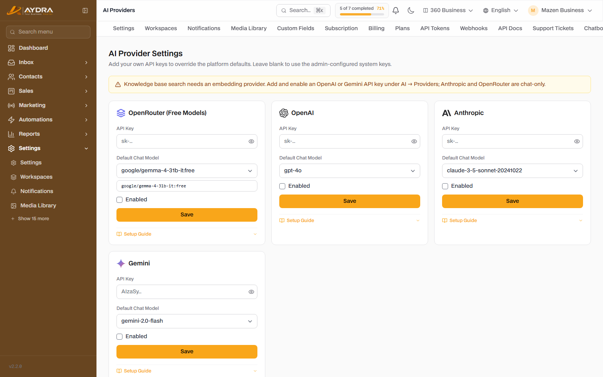

Setup & Integrations (BYOK)
This is the most important guide on the platform. AYDRA provides the storage and the running of the system, but every channel needs your own keys: WhatsApp, Instagram, SMS, email, AI and the store. If you do not enter the keys, the channel will not work — and that is intentional behavior, not a malfunction.
Before you start: gather the details for every integration in one place. Most support tickets are caused by a missing or expired key, or a test key instead of a production one.
What does the platform provide and what do you provide?

| Item | Platform | You (the customer) |
|---|---|---|
| Storage, database and hosting | ✅ | — |
| Meta app identity (App ID / App Secret) | ✅ | — |
| Payment and subscription gateways | ✅ | — |
| WhatsApp Business Account + number + token | — | ✅ |
| Social accounts (Facebook/Instagram/LinkedIn/X/YouTube/TikTok) | — | ✅ |
| SMS provider + sender ID + keys | — | ✅ |
| Mail server / SMTP | — | ✅ |
| AI keys (OpenAI/Anthropic/Gemini/OpenRouter) | — | ✅ |
| Shopify / WooCommerce store details | — | ✅ |
Checklist of required keys
Print this list and gather everything before you start:
| Integration | What you need | Where to get it |
|---|---|---|
| WABA ID · Phone Number ID · Permanent Access Token | Meta Business Suite / WhatsApp Manager | |
| Instagram / Messenger | A Facebook account + page + publishing permissions | Meta for Developers (page permissions) |
| SMS | Provider · API Key/SID · Sender ID | Your SMS provider’s dashboard |
| Email / SMTP | Host · Port · Username · Password · From | Your email provider or your own server |
| AI | API Key + a chat model (+ an Embeddings model) | OpenAI / Anthropic / Google / OpenRouter |
| Shopify | A *.myshopify.com domain + Admin API Token + Webhook Secret | Shopify Admin ← Apps |
| WooCommerce | Store URL + Consumer Key + Consumer Secret | WooCommerce ← REST API |
| Domain | Subdomain or Custom Domain + DNS | Your domain / hosting dashboard |
1. WhatsApp (WhatsApp Cloud API)

Connecting is done from Inbox ← Channel setup. The preferred method is Embedded Signup: you click the connect button, sign in with your Meta account, and choose your number — and it is linked automatically.
Automatic connection (Embedded Signup)
- Click Connect WhatsApp and choose “Continue with Meta”.
- Sign in with the Facebook account that owns the Business Account.
- Choose or create a WhatsApp Business Account.
- Choose the phone number. The number must not be registered on the regular WhatsApp app — if it is, delete it from the app first.
- Complete the permissions, then wait for the success message.
Manual connection (Manual)
- From Meta Business Suite, create an app and get: WABA ID, Phone Number ID, and a Permanent Token (from a System User).
- On the setup page, click “Manual connect” and enter the three values.
- Add the webhook URL shown on the page to the app settings in Meta, then verify it.
- After connecting, click Sync phone numbers, then Sync templates.
A temporary token expires after 24 hours. Use a Permanent Token from a System User. Watch the “Connection health” on the setup page: if the token shows as expired, the channel will stop sending.
Templates
Any message that starts a conversation on WhatsApp must be an approved Template. Create it from Marketing ← WhatsApp templates, and wait for Meta’s approval (it can take from a few minutes up to 24 hours). Rejected templates show the reason for rejection — edit it and resubmit.
Is your number running on the WhatsApp Business app?
If you use the number on the WhatsApp Business app and want to keep it on your phone as well, do not delete it from the app the usual way. Use the WhatsApp Business app coexistence feature instead — see Guide 11.
2. Instagram and Messenger
- From the channel setup page, choose Instagram or Messenger.
- Sign in with the Facebook account that manages the page.
- Choose the page (Messenger) or the business account (Instagram).
- Approve the message management and publishing permissions.
If a message appears about Content-Security-Policy or the Facebook SDK failing to load, the problem is in the server/proxy configuration and not in your account. Contact the platform administrator.
3. SMS
From Marketing ← SMS gateways. The supported providers:
| Region | Providers |
|---|---|
| Global | Twilio · Vonage (Nexmo) · Telnyx · ClickSend · Amazon SNS |
| Egypt | SMS Misr · Cequens |
| Gulf | Unifonic · Taqnyat · Msegat · Infobip |
- Choose the provider.
- Enter the required keys (API Key / SID / Token depending on the provider).
- Enter the Sender ID approved by the provider.
- Save, then click Test connection if it is available.
- Send a test message to your number before any campaign.
If sending fails even though the keys are correct, check: the account balance, the Sender ID approval, and the international number format (example: 2010... without a + or leading zeros).
4. Email (SMTP)

From Marketing ← Mail server. This server is used for email campaigns, email sequences, and system notifications if you connect it.
- Enter the Host and the Port (usually 587 with TLS or 465 with SSL).
- Enter the username and password.
- Set the From Email and the From Name.
- Save, then send a test message.
Use an email address on your own domain, and set up SPF and DKIM at your domain provider. Without that, your messages will go to Spam even if the SMTP is working.
5. AI (BYOK)

Connecting is done from Settings ← AI providers. The supported providers: OpenRouter · OpenAI · Anthropic · Gemini.
- Open the provider and click “Add key”.
- Paste the API Key (it is stored encrypted and is not shown again after saving).
- Choose the default chat model.
- Enable the provider.
- If you are going to use knowledge bases, enable a provider that supports Embeddings (OpenAI or Gemini).
Knowledge bases do not work without an enabled Embeddings provider. If a warning appears at the top of the page, that is what it means.
6. Online stores
Shopify
- From Sales ← Stores ← Add store, choose Shopify.
- Enter the store domain in the format
your-store.myshopify.com(not the custom domain). - Create an Admin API Access Token with read permissions for orders and products, and enter it.
- Copy the Webhook Secret and add it in Shopify when you set up the webhooks.
WooCommerce
- Enter the full store URL (
https://shop.example.com). - From WooCommerce ← Settings ← Advanced ← REST API, create a key with Read/Write permissions.
- Enter the Consumer Key and the Consumer Secret.
- Save, then click “Sync” to confirm the connection.
7. Domain and subdomain
- Subdomain: for example
acmebecomesacme.<base-domain>. The platform administrator sets it from the customers screen. - Custom Domain: for example
crm.company.com. It requires configuring DNS (CNAME or A) to the platform server, and then an SSL certificate. - After changing the domain, wait for DNS propagation (it can take up to 24 hours).
8. Outgoing webhooks
From Settings ← Webhooks. They are used to notify your external systems of events (such as a lead being created or a message being received).
- Add an Endpoint (an HTTPS URL that receives POST).
- Choose the events you need.
- Keep the Secret to verify the request signature.
- Use “Send test”, then check the “Delivery log” whenever something fails.
Common connection errors
| Message / symptom | Cause | Solution |
|---|---|---|
| WhatsApp token expired | A 24-hour temporary token was used | Create a Permanent Token from a System User and reconnect |
| Number already registered | The number is on the regular WhatsApp app | Delete the account from the app and try again |
| Template rejected | Non-compliant content or missing variables | Edit the text and resubmit after reading the rejection reason |
| SMS sending failed | Sender ID not approved or zero balance | Check the provider’s dashboard |
| Email going to Spam | SPF/DKIM are not configured | Configure the DNS records at your domain provider |
| Invalid AI key | A test, expired or zero-balance key | Create a production key and make sure there is a balance |
| No Embeddings | No provider supporting them is enabled | Enable OpenAI or Gemini |
| Webhook not arriving | The URL is unreachable or the signature is wrong | Check the delivery log and retest the endpoint |
After finishing this guide all your channels will be ready. Move on to the Inbox to start receiving conversations.